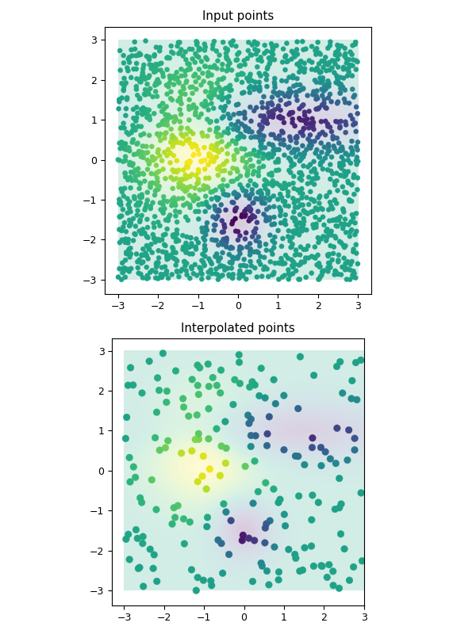

3.5.6.28. test_regrid_kriging_parallel.py – Test function OrdinaryKriger() in parallel and multifit modes¶

"""Test function :func:`~vacumm.misc.grid.kriging.OrdinaryKriger` in parallel and multifit modes"""
# Params
npi = 2000 # number of input points
npo = 200 # number of output points
npmax = 500 # max size of clouds
nproc = 2 # max number of procs
# Imports
from vcmq import P, savefigs, code_file_name, N
from vacumm.misc.grid.kriging import (gridded_gauss3, random_gauss3,
random_points, OrdinaryCloudKriger)
from time import time
# Random and gridded input fields
xg, yg, zzg = gridded_gauss3()
xi, yi, zi = random_gauss3(np=npi)
zi = N.vstack((zi, zi)) # simulate several time steps for multifit
# Init kriger
kriger = OrdinaryCloudKriger(xi, yi, zi, npmax=npmax, nproc=nproc)
# Output points
xo, yo = random_points(np=npo)
# Interpolate
t0 = time()
zo = kriger(xo, yo)
# Plot
P.figure(figsize=(6, 8))
axis = [xg.min(), xg.max(), yg.min(), yg.max()]
kw = dict(vmin=zi.min(), vmax=zi.max())
kwim = dict(extent=axis, interpolation='bilinear', origin='lower', alpha=.2, **kw)
kwsc = dict(lw=0.2, **kw)
P.subplot(211)
P.imshow(zzg, **kwim)
P.scatter(xi, yi, c=zi if zi.ndim==1 else zi[0], s=20, **kwsc)
P.title('Input points')
P.subplot(212)
P.imshow(zzg, **kwim)
P.scatter(xo, yo, c=zo if zo.ndim==1 else zo[0], s=40, **kwsc)
P.title('Interpolated points')
P.tight_layout()
savefigs(code_file_name(), verbose=False)
P.close()